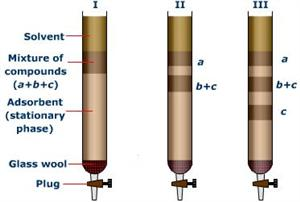
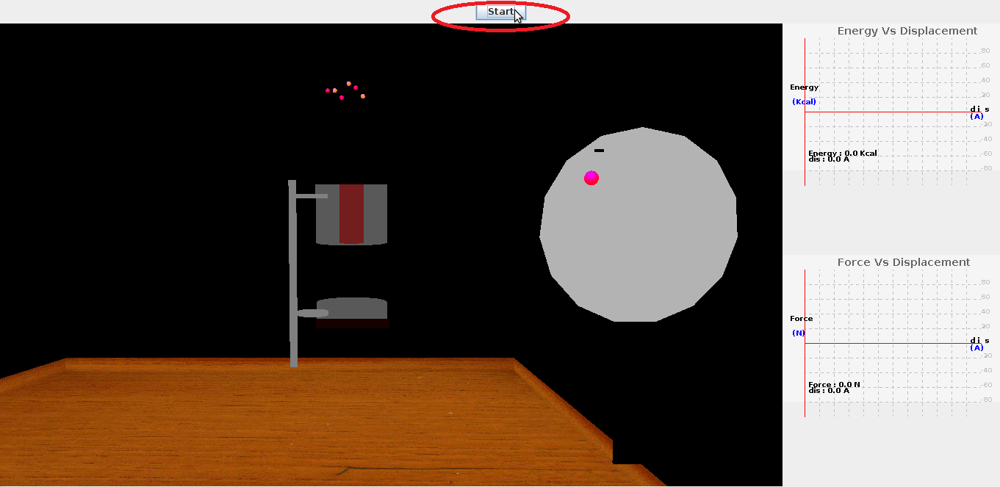

Chromtography,a greek word which means color writing [chrom:color graphy:writing] is collective term for set of laboratory techniques used for separation of mixtures. This process use to separate molecules based on physical properties of molecules such as
- Mass
- Charge
- Hydrophobic interactions
- Affinity for ligands or substrates
The basic idea here is that different components of a mixture interact differently with a common medium (it can be a solid substrate or a liquid medium). The differences in the interactions between the mixture and the medium are utilized to separate the components from the mixture. By allowing a mixture to run through a column, which is packed with a suitable medium, the components can be separated out. Among all the chromatographic techniques column chromatography is widely used owing to its low cost and disposability of the stationary phase.
Defination's of some general terms used in these techniques:
- Elute:is the mobile phase leaving the column
- Analyate:is the substance to be separated during chromatography
- Mobile phase: This consists of solvent and sample which needs to be separated,this phase moves along the column in a definite direction.Mobile phase may be liquid,gas or fluid
- Stationary phase: Phase which remains stationary called stationary phase,generally packing material used to fill the column acts as stationary phase.
This experiment demonstrates how inter atomic interactions are used to purify mixtures. A simplified version of the column chromatography is used here to provide the atomistic details of purification of a binary mixture (a mixture consisting of two types of atoms).

In column chromatography experiments, a long glass tube (as shown in the figure) is filled with a suitable material called the stationary-phase (also called as adsorbent). The mixture to be separated is dissolved in a suitable medium, which is called the mobile phase. When the mobile phase is passed through the column there is a three way equilibrium established between the sample,solvent and the adsorbent.Molecules in the mixture which interact strongly with stationary phase moves slowly through the column relatively to others that interact weakly with stationary phase. These weakly interacting molecules leave the column first and thus they can be separated out from the atoms that interact strongly with the stationary phase.


To demonstrate how the knowledge of molecular forces is used in purification of mixtures of compounds.


To perform this experiment there are certain parameters to be initialized and the procedure detailed here can be followed.
| STEP1:Click on the start button ,to start the experiment. |
|  |
| Step2: The molecules pass through the column a plot of energy ,force acting on them during passage through column is seen on left side. |
 |